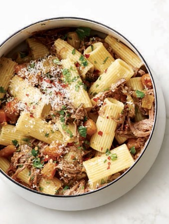

Pulled beef ragu recipe

Ingredients
2kg beef roast
1 cup red cooking wine
2 cups uncooked rigatoni pasta
Recipe
Sear all sides of the beef roast until browned.
Reduce red wine until only 1 cup remains.
Enjoy!